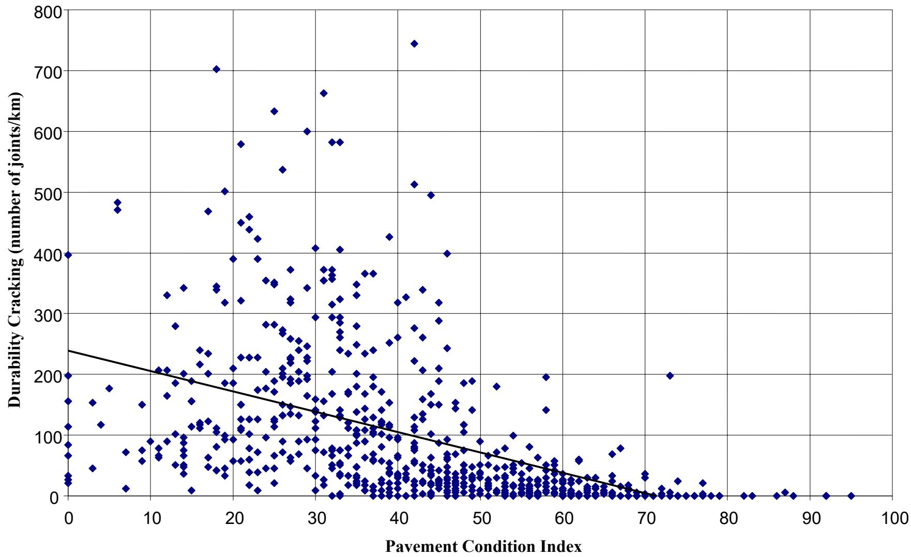
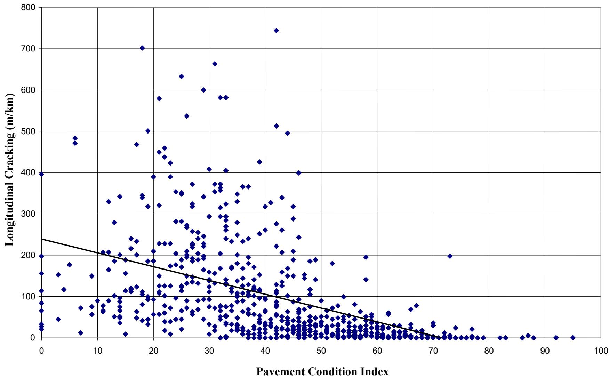
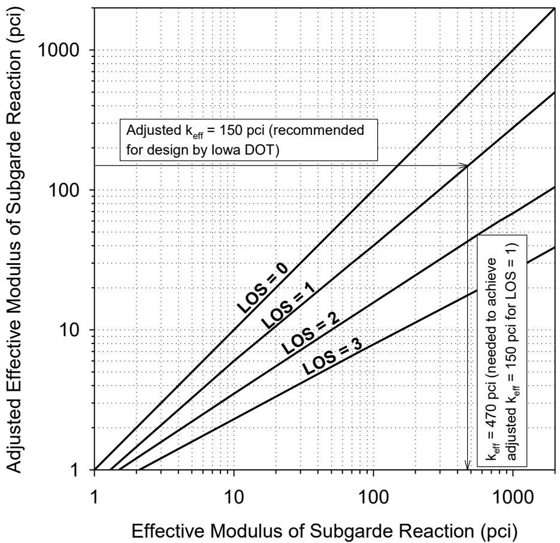
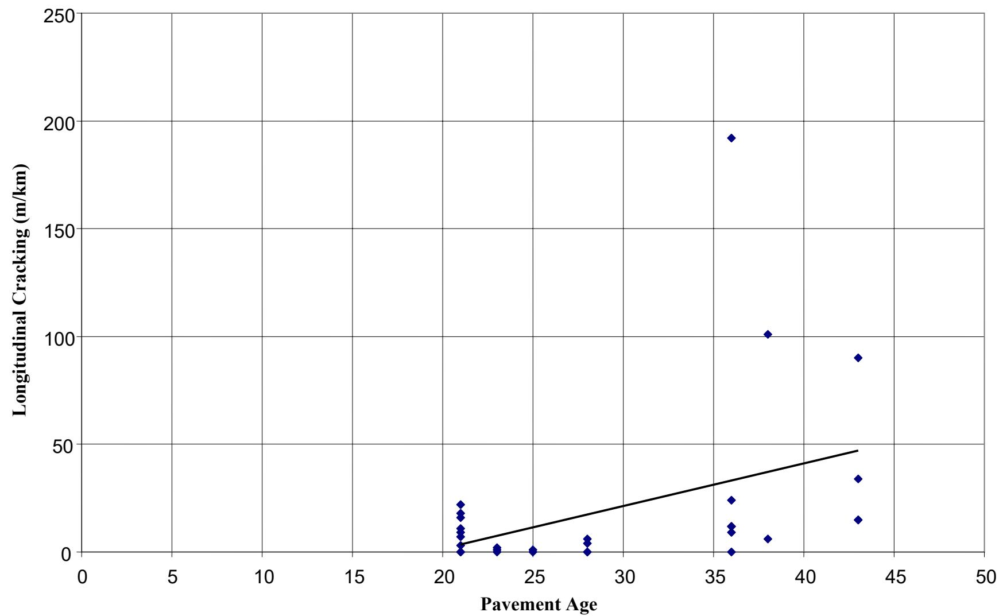
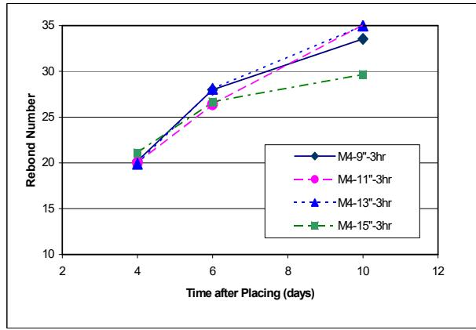
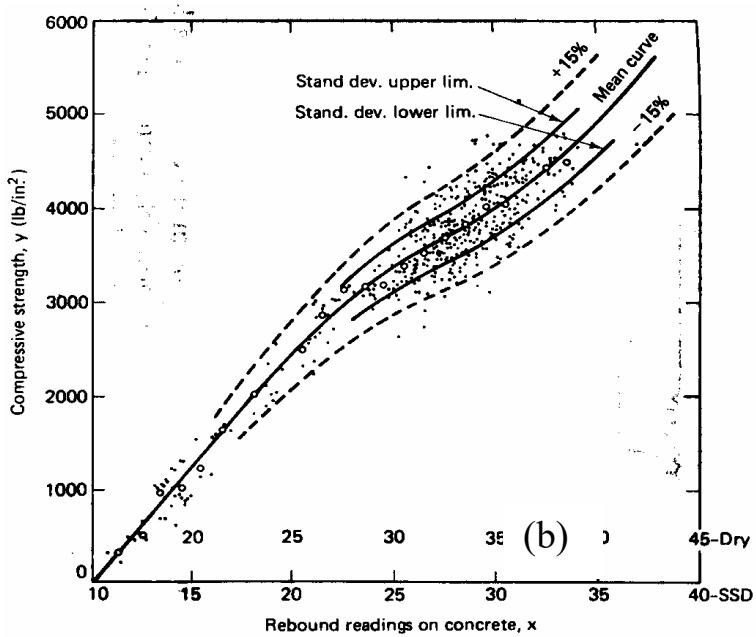

Surface Strength & Condition
Surface strength and condition represent the capacity of a construction material to resist physical degradation, deformation, and structural failure under the combined influence of mechanical loading, environmental exposure, and inherent material properties. The integrity of these surfaces is governed by complex interactions between internal stress mechanisms, such as those induced by thermal fluctuations and shrinkage, and external factors including moisture intrusion and traffic loads that drive distress patterns like cracking and spalling [1] [2]. Assessing this condition involves evaluating both the macroscopic state of surface integrity and the microscopic resistance to deformation, where material stiffness and hardness serve as key indicators of long-term durability and load-bearing capability [3].
CP Tech Center reports covering “Surface Strength & Condition” also include the following subtopics: Pavement Condition Index and Schmidt Hammer.
Surface Strength & Condition evaluates how well a material resists damage and maintains its structural capacity under stress. Pavement Condition Index quantifies surface integrity by assigning a numerical rating that correlates directly with the extent of cracking and physical deterioration, providing a direct measure of wear. Schmidt Hammer quantifies surface hardness through rebound distance measurements to estimate in-place concrete strength, offering insight into the material’s internal resistance to deformation.
Sources (4)
Sub-concepts (2)
Key findings
- Identified that surface deterioration is a continuous process driven by initial distresses like cracking, which facilitate moisture infiltration and freeze-thaw cycles [1].
- Demonstrated that permeability serves as a critical measure of concrete durability, with well-performing sections exhibiting lower water-to-cement ratios than poorly performing ones [1].
- Observed that surface texture evolution, such as aggregate polishing over decades, can contribute to quieter and reflection-free performance if the underlying mix design and construction practices were sound [1].
- Showed that increased patch depth enhances concrete strength gain through the heat of hydration, allowing thicker sections to achieve target maturity factors faster than thinner ones [3].
- Revealed that Schmidt hammer rebound tests do not reliably distinguish between different mix designs or indicate how patch thickness influences internal strength [3].
- Established that maturity testing remains a consistent and reliable method for determining optimal traffic opening times based on achieved flexural or compressive strength [3].
- Found that surface strength and condition are fundamentally governed by the uniformity, stiffness, and hydraulic properties of underlying foundation layers rather than surface metrics alone [4].
- Measured that non-uniform support significantly increases localized deflections and stress concentrations, leading to premature distresses such as fatigue cracking and faulting [4].
Structural and Geometric Influences on Surface Performance
Evidence: 3 reports (3 primary)
The long-term durability of rigid pavements is governed by the complex interaction between structural design parameters, material properties, and environmental conditions, where subgrade stability and drainage are critical for preventing premature failure [1]. Internal stresses arising from shrinkage and thermal curling drive joint activation, with the likelihood of opening strongly correlated to geometric ratios that integrate slab dimensions with foundation support characteristics [2]. While increased slab thickness can elevate curling stresses due to greater temperature differentials across the section, joint spacing remains the dominant geometric factor influencing activation rates and overall performance [2].
The relationship between these geometric factors and joint behavior is illustrated in the following figure.
 Joint activation percentage and L/l ratio for a 4-inch PCC overlay with varying joint spacing. [2]
Joint activation percentage and L/l ratio for a 4-inch PCC overlay with varying joint spacing. [2]
The figure displays the relationship between joint spacing, joint activation percentage, and the slab length to radius of relative stiffness ratio (L/ℓ) for concrete pavement overlays. The data indicates that larger L/ℓ ratios, achieved through increased slab length, correlate with higher percentages of activated joints.
Research problem — Current assessment methods often fail to capture the critical influence of subsurface foundation support conditions, such as stiffness and uniformity, on long-term surface durability because they rely primarily on surface-level metrics that ignore underlying structural deficiencies [4]. There is a need to correlate specific geometric parameters, particularly slab dimensions relative to stiffness, with distress mechanisms like cracking and joint activation to optimize design for structural integrity beyond simple material strength tests [2]. Research must address the gap in understanding how complex interactions between mix design variables, construction quality control, and environmental exposure drive specific distress patterns that are not fully explained by standardized condition indices alone [1].
The following figure illustrates how durability cracking correlates with the Pavement Condition Index to highlight these limitations in standard assessment metrics.

Scatter plot of durability cracking versus pavement condition index for Iowa primary PCC pavement sections. [1]The figure plots the number of joints per kilometer experiencing durability cracking against a Pavement Condition Index, revealing a negative correlation where higher distress counts are associated with lower surface condition scores.
State of the art — Current practice emphasizes that long-term pavement performance depends on the complex interaction between structural design, material durability, and foundation support rather than isolated surface metrics [1]. Assessment methodologies have shifted from generic empirical estimates to integrating in situ field testing with laboratory characterization to derive site-specific design parameters [4]. Established standards utilize Falling Weight Deflectometer tests to measure dynamic deflections and derive static moduli, while Dynamic Cone Penetrometers provide empirical estimates of subgrade strength profiles [4]. The field consensus highlights that spatial uniformity in subgrade and subbase support is critical to preventing localized stress concentrations and premature failures, making foundation stability as important as surface condition [4].
The following figure illustrates how these varying support conditions influence stress distribution and pavement response.
 Contour plots of principal stresses and deflections under uniform and nonuniform subgrade conditions (from White et al. 2005b) [4]
Contour plots of principal stresses and deflections under uniform and nonuniform subgrade conditions (from White et al. 2005b) [4]
The figure displays a contour plot of principal stresses, showing localized high-stress concentrations in the lower section against a background of low stress. A corresponding 3D surface plot illustrates deflections, revealing significant deformation and displacement gradients across the modeled area. These visualizations demonstrate how non-uniform subgrade support influences critical pavement responses such as maximum stresses and deflections that affect performance.
Findings from the reports
- Found that high initial material strength does not guarantee long-term surface integrity, as field assessments showed wide variance in condition despite concrete properties meeting specifications [1].
- Demonstrated that standardized quality control measures and durability rankings failed to uniformly predict performance outcomes such as roughness or faulting [1].
- Revealed that surface condition is a dynamic result of cumulative environmental exposure and rehabilitation efforts, where good in-service performance can coexist with visible distresses if structural support remains adequate [1].
- Identified that permeability serves as a critical measure of concrete durability, with well-performing sections exhibiting lower water-to-cement ratios compared to poorly performing ones [1].
- Established that pavement surface condition is significantly influenced by underlying foundation properties such as stiffness and support uniformity rather than age alone [4].
- Showed that measuring foundation characteristics allows engineers to predict long-term Pavement Condition Index performance with higher reliability than considering age in isolation [4].
- Observed that non-uniform support significantly increases localized deflections and stress concentrations, leading to premature distresses such as fatigue cracking and faulting [4].
- Found that narrower joint spacing in concrete overlays demonstrates superior resistance to cracking compared to wider spacings [2].
Novelty & rigor — Research novelty lies in shifting surface condition assessment from isolated metrics to a holistic, foundation-driven predictive framework that integrates subsurface stiffness and drainage characteristics [4]. Methodological distinctiveness is achieved through the application of multi-variate statistical modeling and specialized field devices to quantify how subgrade uniformity and hydraulic conductivity directly influence long-term performance reliability [4]. Reproducibility requires strict adherence to in situ testing protocols using deflectometer and penetrometer equipment, combined with precise laboratory analysis of core samples to derive accurate design input parameters for structural evaluation [1] [4].
The following figure illustrates the determination of average CBR for the top 12 inches of subgrade alongside the CBR of any weak layers within that profile.
 Determination of average CBR of top 12 in. of subgrade and CBR of the “weak” layer within the subgrade [4]
Determination of average CBR of top 12 in. of subgrade and CBR of the “weak” layer within the subgrade [4]
The figure displays a plot of California Bearing Ratio (CBR) values against depth, delineating distinct pavement layers including PCC, Subbase, and Subgrade. It specifically identifies the CBR value for a “weak” zone within the subgrade and calculates an average CBR for the top 12 inches of that layer.
Across the reviewed reports, surface performance is collectively established as a dynamic outcome governed by the interplay of geometric design and foundation uniformity rather than initial material strength alone. Geometric configurations such as joint spacing critically dictate structural integrity, with narrower spacings significantly reducing cracking compared to wider layouts that exhibit widespread failure. While uniform foundation support extends fatigue life and improves prediction reliability over age-based estimates, it does not guarantee reduced loss of support if underlying hydraulic properties or compaction are poor. [1] [2] [4]
The following figure illustrates how longitudinal cracking correlates with the overall pavement condition index.

Scatter plot of longitudinal cracking versus pavement condition index. [1]The figure displays a scatter plot with the Pavement Condition Index on the horizontal axis and Longitudinal Cracking (m/km) on the vertical axis, showing data points represented by blue diamonds. A black trend line indicates a negative correlation between the two variables, where higher longitudinal cracking values are associated with lower pavement condition index scores.
Implications — Designers must prioritize rigorous field verification of subgrade and subbase properties over standard empirical estimates to accurately predict long-term surface performance [4]. Specifying pavement foundations based on measured in situ composite moduli is essential to mitigate risks associated with poor support, drainage failures, and non-uniform settlement [1] [4]. Industry practice should integrate comprehensive testing of foundation layers alongside advanced materials analysis to validate the feasibility of durable, low-maintenance pavements [1].
The following figure provides a chart for estimating the adjusted or effective modulus of subgrade reaction.

Chart for estimating adjusted or effective modulus of subgrade reaction (modified from AASHTO 1993) [4]The figure displays a log-log plot comparing the Effective Modulus of Subgrade Reaction against the Adjusted Effective Modulus, featuring diagonal lines that represent different Levels of Service (LOS). It includes specific annotations for an adjusted k_eff value recommended by Iowa DOT and a threshold indicating voids underneath the pavement. This chart provides a method for quantifying subgrade stiffness and identifying loss of support, which are critical factors in assessing the structural integrity and long-term durability of pavement surfaces.
Limitations — Assessments are constrained by a lack of detailed historical data on subgrade materials and structural capacity, which prevents full correlation between current surface conditions and long-term performance trends [1]. Predictive models relying solely on pavement age fail to account for critical foundation variables such as subgrade strength and drainage, while empirical testing methods often overlook existing voids or settlement beneath the surface [4]. Current design procedures tend to underestimate support loss compared to field measurements, and prediction models based on small datasets require validation across larger and older project pools before widespread application [4].
The following figure illustrates the relationship between longitudinal cracking and pavement age to highlight these performance trends.

Longitudinal cracking vs. pavement age [1]The figure plots longitudinal cracking against pavement age, showing a general upward trend where older pavements exhibit higher levels of distress.
Evaluation Methodologies and Instrumentation
Evidence: 1 report (1 primary)
Evaluation methodologies for surface strength rely on non-destructive techniques that infer material properties through physical interactions, such as measuring the rebound of an impactor to estimate hardness and stiffness [3]. These indirect measurements are governed by complex stress-strain relationships that vary significantly based on surface texture, moisture content, aggregate composition, and carbonation levels [3]. Because environmental and material variables can alter instrument readings independently of actual structural integrity, establishing empirical correlations for specific conditions is essential for accurate assessment [3].
The following figure illustrates how variations in patch thickness influence these rebound measurements.

Effect of patch thickness on rebound numbers [3]The figure plots the rebound number against time after placing for four different sample groups, identified by varying numerical parameters in their labels.
State of the art — Current practice for assessing concrete surface strength relies on a combination of maturity methods and nondestructive testing techniques, such as the Schmidt hammer, to address their respective limitations regarding sensitivity to mix stiffness and local surface conditions [3]. Established protocols typically employ maturity methods to determine structural opening criteria based on internal strength development, while using rebound testing cautiously for relative uniformity checks with empirical correlations calibrated for specific materials [3].
Findings from the reports
- Increased patch depth enhanced concrete strength gain through the heat of hydration, allowing thicker sections to achieve target maturity factors faster than thinner ones [3].
- Maturity testing proved to be a consistent and reliable method for determining optimal traffic opening times based on achieved flexural or compressive strength, whereas Schmidt hammer rebound tests did not reliably distinguish between different mix designs or indicate how patch thickness influenced internal strength [3].
- Visual distress surveys indicated no performance differences among patches regarding mix type, opening time, or depth, suggesting that load transfer remained adequate across all test sections [3].
Novelty & rigor — Research introduces a novel evaluation methodology that quantifies how early traffic loading compresses fresh concrete to artificially enhance surface hardness readings before full hydration occurs [3]. The approach uniquely distinguishes between internal strength gain tracked by maturity testing and local surface stiffness variations measured by rebound devices, highlighting limitations in using single metrics for mix differentiation [3]. Methodological rigor is established through strict experimental protocols that standardize instrument orientation and exclude outlier readings to ensure reproducible surface hardness assessments across varying patch depths and opening times [3].
Implications — Practitioners must distinguish between near-surface hardness and internal structural maturity when selecting evaluation tools, as rebound testing alone cannot reliably predict optimal opening times or differentiate mix designs [3]. Maturity methods should be prioritized for determining safe early traffic loading thresholds, while surface hardness devices serve primarily as monitoring tools rather than definitive predictors of structural capacity [3].
Limitations — Empirical correlations between rebound values and actual strength are compromised by confounding variables such as aggregate stiffness, surface texture, and moisture conditions [3]. The instrumentation lacks the sensitivity required to distinguish subtle variations in concrete mix performance during the critical early-age period [3].
The following figure illustrates the empirical relationship between rebound numbers and compression strength that is subject to these limitations.

b. Rebound number vs. compression strength [3]The figure plots compressive strength against rebound readings on concrete, displaying a positive correlation where higher rebound numbers correspond to greater material strength. A mean curve is fitted through the data points, flanked by standard deviation limits and percentage bands that indicate the variability inherent in the test results. The rebound hammer testing method relies on local conditions where only the concrete near the plunger significantly influences the rebound value. Because the amount and type of aggregate has a significant effect on concrete stiffness, it is necessary to establish the strength-rebound number relationship on concrete made with the same materials.
Related concepts
In this hierarchy
- Parent: Condition Evaluation & Nondestructive Testing
- Child: Pavement Condition Index
- Child: Schmidt Hammer
Related by shared evidence
- CP Tech Center Reports — shares 4 reports
- Transverse Cracking — shares 4 reports
- Falling Weight Deflectometer — shares 3 reports
- International Roughness Index (IRI) — shares 3 reports
- Joint Faulting — shares 3 reports
- Load Transfer Efficiency — shares 3 reports
- Pavement Condition Index — shares 3 reports
- Concrete Pavement Joint — shares 2 reports
Similar topics
- Schmidt Hammer
- Condition Evaluation & Nondestructive Testing
- Pavement Condition Index
- Maturity Method
- Stress-Wave & Sonic Methods
- Surface Characteristics
- Pavement Friction
- CP Tech Center Reports
References
- J. K. Cable and H. Ceylan, "Defining the Attributes of Good In-Service Portland Cement Concrete Pavements," Center for Portland Cement Concrete Pavement Technology, Iowa State University, Ames, IA, Rep. DTFH61-01-X-00042 (Project 9), 2004. [Online]. Available: https://www.intrans.iastate.edu/wp-content/uploads/2018/03/pavement_attributes.pdf
- J. Gross, D. King, H. Ceylan, Y. A. Chen, and P. Taylor, "Optimized Joint Spacing for Concrete Overlays with and without Structural Fiber Reinforcement," National Concrete Pavement Technology Center, Ames, IA, Rep. TR-698, 2019. [Online]. Available: https://www.intrans.iastate.edu/wp-content/uploads/2019/06/optimized_joint_spacing_for_overlays_w_cvr.pdf
- J. K. Cable, K. Wang, S. J. Somsky, and J. Williams, "Portland Cement Concrete Patching Techniques vs. Performance and Traffic Delay," Center for Portland Cement Concrete Pavement Technology, Iowa State University, Ames, IA, 2004. [Online]. Available: https://www.intrans.iastate.edu/wp-content/uploads/2018/08/patching_report.pdf
- D. White and P. Vennapusa, "Optimizing Pavement Base, Subbase, and Subgrade Layers for Cost and Performance on Local Roads," Concrete Pavement Technology Center and Center for Earthworks Engineering Research, Ames, IA, Rep. TR-640, 2014. [Online]. Available: https://www.intrans.iastate.edu/wp-content/uploads/2018/03/local_rd_pvmt_optimization_w_cvr.pdf
Feedback on this page